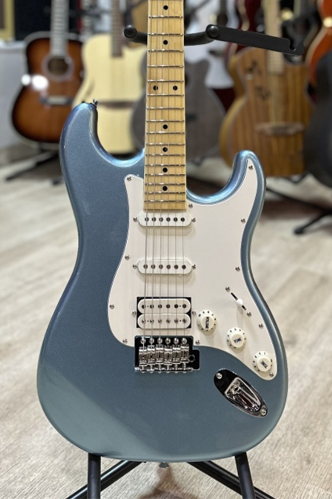

Электрогитара

Цена: 20 000 р.
Описание:
Электрогитара - выбор настоящих любителей рока. Выбор тех, кто уже имеет базовые навыки игры на инструменте. Благодаря большому количеству режимов позволяет менять звучание и играть совершенно разнообразные композиции.
Характеристики:
Количество ладов: 22
Количество струн: 6
Материал грифа: канадский клён
Материал корпуса: липа
Заказать